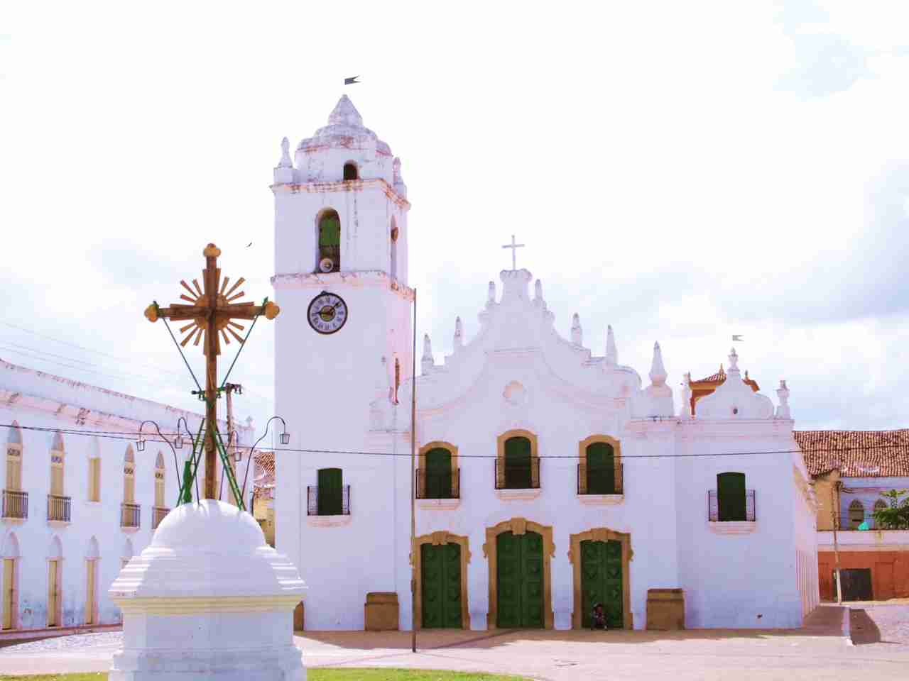
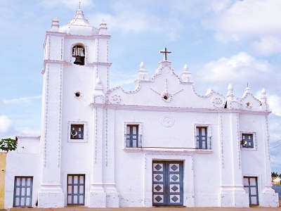
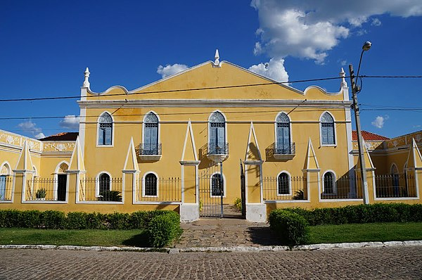

Informações técnicas sobre relevo, população, IDH etc.
| INFORMAÇÕES | |
|---|---|
| Municípios limítrofes | Orós, Cedro e Bernardino Batista |
| Fundação | 4 de maio de 1738 (283 anos) |
| Área total | 1 871,980 km² |
| Clima | Semiárido |
| IDH | 0,606 — médio |
| PIB | R$ 562 450,09 mil |
| INFORMAÇÕES TERRITORIAIS | |
|---|---|
| Número de habitantes | 67.456 habitantes |
| Superfície de Icó |
187 200 hectares
1872,00 km² (722,78 sq mi) |
| Densidade populacional | 36 hab./km² |
| Altitude de Icó | 153 metros de altitude |
| Coordenadas geográficas decimais |
Latitude:
-6.40207
Longitude: -38.8552 |
| Coordenadas geográficas sexagesimais | Latitude: 6° 24' 7'' Sul , Longitude: 38° 51' 19'' Oeste |
| INFORMAÇÕES DO MUNICÍPIO | |
|---|---|
| Endereço da Prefeitura Municipal de Icó |
Icó
Prefeitura de Icó
Av. Ilídio Sampaio, 2131 ICÓ - CE, 63430-000 Brasil Work +55 88 3561-1195 Fax (88) 3561-1195 |
| Telefone da prefeitura |
(88) 3561-1707
Internacional: +55 88 3561-1707 |
| Fax |
(88) 3561-1195
Internacional: +55 88 3561-1195 |
| Endereço eletrônico da prefeitura |
Não disponível
|
| Site oficial do município | ico.ce.gov.br |
| INFORMAÇÕES DO ADMINISTRATIVAS | ||
|---|---|---|
| Prefeita de Icó | ANA LAÍS PEIXOTO CORREIA NUNES | |
| Partido politico | PDT | |
| INFORMAÇÕES DE TRANSPORTE | |
|---|---|
| Transporte urbano disponível | - |
| Aeroporto |
Aeroporto Internacional Pinto Martins
294.5 km
Aeroporto Regional do Cariri
101.8 km
Aeroporto Dix-Sept Rosado
212.4 km
|
| INFORMAÇÕES DE DISTÂNCIA A OUTRAS CIDADES | ||
|---|---|---|
| São Paulo : 2083 km | Rio de Janeiro : 1895 km | Brasília : 1439 km |
| Salvador : 732 km | Belo Horizonte : 1592 km | Manaus : 2377 km |
| Curitiba : 2391 km | Fortaleza : 301 km mais perto | Goiânia : 1610 km |
| Belém : 1204 km | Porto Alegre : 2932 km | Guarulhos : 2061 km |
| Campinas : 2037 km | São Luís : 743 km | Recife : 476 km |
| Distância calculada em linha reta! | ||
Conheça mais sobre a história de Icó.
As terras entre as serras do Cafundó, Camará e às margens do rio Salgado eram habitadas por diversas etnias tapuias, entre elas os icó, icozinho, janduí e quixelô.
A colonização das terras de Icó data do final do século XVII e início do século XVIII. Os primeiros colonizadores da cidade eram conhecidos como "os homens do (Rio) São Francisco", que faziam parte de uma das frentes de ocupação do território cearense, a do "sertão-de-dentro", dominada pelos baianos, que serviu para tentar ocupar todo o interior cearense.
A entrada de Bartolomeu Nabo Correia e mais 40 homens, chegou em 1683 e deu início à povoação conhecida como "Arraial Novo dos Icós", a sua primeira fase. Numa segunda fase, famílias se instalaram através das sesmarias e assim surgiram dois povoados às margens do rio Salgado: o "Icó de Baixo" e o "Icó de Cima". Ambos, povoados dominados pelos membros das famílias Fonseca e Monte, respectivamente. Devido às constantes inundações, o povoado que prevaleceu foi o "Icó de Cima".Tanto na fase de descobrimento quanto na de assentamento, os conflitos com os indígenas foram constantes, até que a Igreja Católica interveio e conseguiu um tipo de pacificação.
A povoação foi elevada a vila em 1738, a terceira vila do Ceará, logo após Aquiraz e Fortaleza. Em 1842, obteve a categoria de cidade. Devido a sua importância econômica, Icó foi uma das cidades que tiveram projetos urbanísticos planejados na corte de Lisboa.
Com a intensificação e o sucesso da indústria do carne-seca e do charque no Ceará, Icó destacou-se durante esta áurea época como um dos três centros comerciais e de serviços do estado, juntamente com Sobral e Aracati, devido a abundância de água, localização estratégica na rota das boiadas. A “Estrada Geral do Jaguaribe" escoava as boiadas entre as fazendas de gado do Sertão do Cariri ao porto e centro de salgagem da carne salgada de Aracati. A "Estrada das Boiadas" ou "Estrada dos Inhamuns" escoava o gado e os produtos entre a Paraíba e o Piauí.
A partir do século XIX, com o final do Ciclo da Carne do Ceará, as plantações de algodão e café foram implementadas. Já na segunda metade deste a iluminação pública foi instalada..
Mesmo assim, Icó enfrentou um processo de degradamento político e econômico devido ao crescimento da importância política do Crato e depois com a expansão da Estrada de Ferro de Baturité até a cidade do Crato em 1910, o que favoreceu o comércio de Iguatu.
Na primeira metade do século XX, Icó volta a ter importância devido ao projeto de combate às secas com o Açude Lima Campos e a BR-116.
Saiba mais sobre os melhores lugares e o que fazer em Icó.
Açude Lima Campos
Igreja de Nossa Senhora da Expectação
A capela que deu origem à Igreja de Nossa Senhora da Expectação do Icó foi construída por Francisco de Monte Silva, um dos primeiros sesmeiros a ocupar a região, ainda na primeira metade do século XVIII.
Santuário Senhor do Bonfim
Edificado pelo primeiro capitão-mor de ordenação do Icó, Bento da Silva Oliveira, a Igreja batizada em homenagem ao Sr. Do Bonfim inspira uma das festas do nordeste brasileiro. A Igreja do Senhor do Bonfim é um dos mais antigos monumentos da cidade, como afirma Pe. Couto em seu livro História do Icó.
Casa De Câmara E Cadeia
É uma das primeiras edificações construídas em Icó. A sua elevação data de 1744. Hoje, o prédio histórico abriga a sede provisória da Secretaria de Cultura e Turismo, além da Biblioteca Pública Plínio Albuquerque.
Veja como chegar nos melhores pontos de Icó.